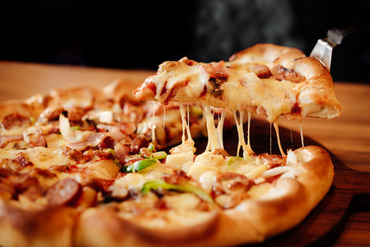

Pizza
Home

Description
Pizza is a delicious and versatile dish loved by people all over the world.
It typically consists of a crispy crust, a rich tomato sauce, and a variety of toppings
such as cheese, vegetables, and meats. Whether you enjoy a classic Margherita or a loaded meat lover’s pizza,
there’s something for everyone to savor.
Making pizza at home allows you to customize every ingredient to your liking.
From choosing the perfect dough texture to experimenting with unique toppings,
the possibilities are endless. Enjoying a freshly baked pizza with family and friends is more than just a
meal—it’s a fun and creative experience that brings people together.
Ingredients
- 1 pizza dough (store-bought or homemade)
- 1/2 cup tomato sauce
- 1 1/2 cups shredded mozzarella cheese
- 1/2 cup sliced pepperoni
- 1/4 cup sliced bell peppers
- 1/4 cup sliced mushrooms
- 1/4 cup sliced black olives
- 1 tsp dried oregano
- 1 tsp dried basil
- 1 tbsp olive oil
- Salt and pepper to taste
Steps
- Preheat your oven to 475°F (245°C).
- Roll out the pizza dough on a floured surface to your desired thickness.
- Transfer the rolled-out dough to a pizza stone or baking sheet.
- Spread the tomato sauce evenly over the dough, leaving a small border around the edges.
- Sprinkle the shredded mozzarella cheese over the sauce.
- Add your desired toppings, such as pepperoni, bell peppers, mushrooms, and olives.
- Season with dried oregano, dried basil, salt, and pepper.
- Drizzle olive oil over the top of the pizza for added flavor and crispiness.
- Bake in the preheated oven for 10-15 minutes, or until the crust is golden and the cheese is bubbly and
slightly browned.
- Remove from the oven and let it cool for a few minutes before slicing and serving.
- Enjoy your supreme homemade pizza!